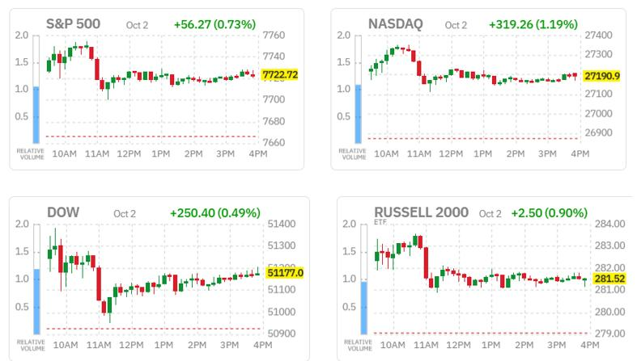
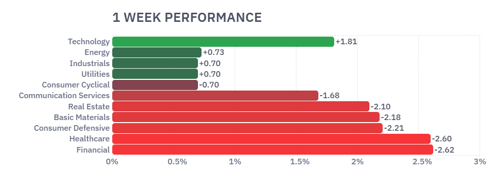
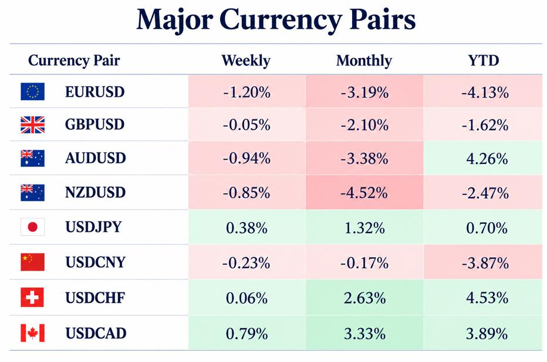
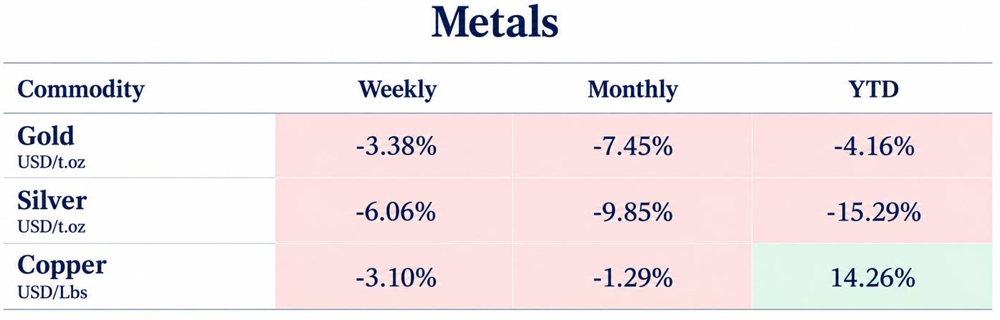
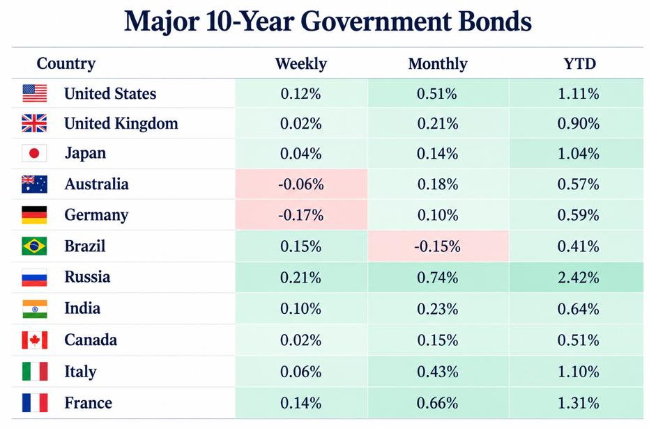

What you need to know this week
Key takeaways
Wall Street Rallies on Weak Jobs Data as Inflation and Bond Yields Keep Markets on Edge
Global markets closed the week balancing signs of a weakening US labor market against persistent inflation and rising government borrowing costs. Wall Street rallied on Friday after September payrolls increased by just 29,000 and unemployment rose to 4.2%, prompting investors to reduce expectations of an October Federal Reserve rate hike.
The S&P 500 gained 0.8%, the Dow rose 0.5%, and the NASDAQ advanced 1.2%. Yet weekly performance remained mixed, as a sustained Treasury selloff overshadowed the late recovery. The US 10-year yield returned to 5.52%, underscoring continuing concerns over inflation, public debt, and the unresolved Middle East conflict.
Currency markets reflected diverging policy expectations. The euro recovered to $1.126 and sterling climbed above $1.32 as the dollar weakened following the jobs report. However, French fiscal concerns constrained the euro, while subdued Canadian growth kept the loonie under pressure. Gold traded around $4,140 an ounce despite reduced expectations of immediate Fed tightening.
In Europe, inflation accelerated to 3.8%, complicating the ECB’s cautious approach to further rate increases. British policymakers also signaled greater openness to tightening as energy costs threatened to prolong inflation pressures. Bund and gilt yields eased from recent highs but remained elevated.
Attention now turns to US inflation releases on October 14 and 15, ahead of the Fed’s October 28 decision, as investors assess whether slower hiring will outweigh persistent price pressures in shaping the next monetary policy move.
U.S Equities
Wall Street Rallies as Weak Jobs Data Eases Rate-Hike Expectations
Wall Street ended solidly higher on Friday as a softer-than-expected September jobs report prompted investors to scale back expectations of imminent Federal Reserve monetary policy tightening.
The benchmark S&P 500 rose 0.8% to close at 7,724.06, while the Dow Jones Industrial Average gained 0.5% to finish at 51,177.44. The tech-heavy NASDAQ Composite climbed 1.2% to 27,190.86, after reaching a record intraday high of 27,353.68 earlier in the session.
Bond Sell-Off Weighs on Weekly Performance
Despite Friday’s gains, weekly performance was mixed. The NASDAQ advanced 0.5%, while the S&P 500 and Dow declined 0.3% and 1.3%, respectively.
The weekly losses were largely driven by a relentless sell-off in longer-term Treasury bonds, which pushed 10-year and 30-year yields to multi-decade highs. However, falling oil prices, supported by improving Middle East crude flows, helped limit the declines.
September Jobs Report Signals Slower Hiring
U.S. nonfarm payrolls increased by 29,000 in September, well below the expected 89,000 and marking the slowest monthly growth of the year. Employment gains for July and August were also revised down by a combined 60,000.
Meanwhile, the unemployment rate rose to 4.2% in September from 4.1% in August, adding to signs of a weakening labor market.
The report comes as other indicators point to a resilient U.S. economy and a slight moderation in persistently high inflation. Against this backdrop, labor market weakness would typically support keeping interest rates steady: further tightening could curb price pressures but also risk weakening economic growth and employment.
Markets Reduce Expectations of an October Rate Hike
The shift in expectations was reflected in the CME FedWatch tool. The probability of a quarter-point rate hike later this month fell to nearly 23%, while the likelihood of the Fed holding rates steady rose to about 77%.
Although the jobs report disappointed, Fed policymakers are likely to remain focused on the inflation side of their dual mandate.
Dallas Fed President Lorie Logan said on Thursday that interest rates would need to rise by at least 50 basis points to curb price pressures. Separately, Fed Governor Lisa Cook warned that inflation driven by artificial intelligence posed a major risk for 2027.
Minneapolis Fed President Neel Kashkari also said he expected further rate hikes would be needed to contain inflation heading into 2027, although he remained uncertain whether the next increase would come in October.
Inflation Releases Take Center Stage Ahead of the Fed Decision
With employment data now in hand, attention turns to the upcoming inflation reports. The Consumer Price Index (CPI) is scheduled for October 14, followed by the Producer Price Index (PPI) on October 15.
These releases will precede the Federal Open Market Committee’s interest rate decision on October 28.
Nike Falls on Revenue Miss and Weak Outlook
Among Friday’s individual stock movers, Nike declined 3.6% after reporting quarterly revenue below expectations following Thursday’s market close and issuing an underwhelming full-year revenue outlook.
The company also announced plans to cut more jobs and reorganize its global business divisions as CEO Elliott Hill seeks to demonstrate progress in his turnaround efforts.
Nike continues to face intensifying competition, a lack of innovative new products, and weak performance in the crucial Chinese market. Revenue is expected to decline by a high-single-digit percentage in fiscal 2027, compared with analysts’ expectations for a drop of around 2%.


Tesla Gains as Deliveries Beat Expectations
Tesla shares rose 4.7% after stronger-than-expected third-quarter deliveries pointed to renewed strength in its core automotive business.
The Elon Musk-led company delivered 486,532 vehicles, approximately 5% above the company-compiled consensus estimate of 461,974.
Forex & Commodities
EUR/USD The euro edged higher on Friday to $1.126, recovering after briefly touching its lowest level in more than a year. The rebound followed weaker-than-expected US employment data, which weighed on the dollar and reinforced expectations that the Federal Reserve may leave interest rates unchanged at its upcoming meeting.
The US economy added just 29,000 jobs in September, well below expectations of 90,000, strengthening the case for a pause in monetary tightening.
Eurozone Inflation Rises as French Fiscal Concerns Pressure the Euro
In the Eurozone, inflation accelerated to 3.8%, its highest level since September 2023 and well above the ECB’s 2% target. Higher fuel prices were the main driver of the increase.
Despite these renewed inflationary pressures, concerns over France’s fiscal outlook continued to weigh on the euro. The government unveiled deficit-reduction plans that the fiscal watchdog described as relying on “optimistic” assumptions.
ECB Signals a Cautious Approach to Further Tightening
Markets expect the ECB to tighten monetary policy gradually. ECB official Isabel Schnabel said the coming months would be crucial for assessing the energy shock and determining the appropriate level of interest rates, signaling caution over further tightening.
Key Technical Levels to Watch
On the upside, initial resistance stands at 1.1270, followed by a more significant barrier at 1.1312. Above these levels, the 100-period SMA at 1.1319 and the 200-period SMA at 1.1360 form a broader supply zone.
On the downside, immediate support lies at 1.1215, followed by the recent structural floor at 1.1200. At this lower level, sellers may hesitate, while short-term dip buyers could attempt to stabilize the pair.
- Over the past month, the Euro US Dollar Exchange Rate - EUR/USD has weakened 3.22%, and is down by 4.18% over the last 12 months.
GBP/USD Sterling extended its gains above $1.32, recovering from its weakest level in three months as weaker-than-expected US employment data put pressure on the dollar.
Markets Price Further Bank of England Tightening
Meanwhile, markets are pricing in around 30 basis points of Bank of England tightening by year-end and roughly 90 basis points by the end of 2027.
Several policymakers, including Governor Andrew Bailey, have signaled greater openness to higher rates as rising energy costs increase the risk of inflation remaining above target.
Closer UK-EU Ties Provide Additional Support
Sterling also received support from comments by Prime Minister Andy Burnham favoring closer UK-EU ties ahead of a summit expected around November 20. His comments included the possibility of revisiting EU membership after the next general election.
Key Resistance Levels Shape the Technical Outlook
On the upside, initial resistance lies near 1.3313, at the downward-sloping trend line break. The next descending barrier stands around 1.3434, converging with the nearby cluster of 50-, 100-, and 200-period simple moving averages around 1.3453.
Above this zone, an upward-sloping trend line now near 1.3544 and a higher structural level around 1.3745 form successive resistance barriers. GBP/USD would need to reclaim these areas to ease the current bearish pressure.
- Over the past month, the British Pound has weakened 2.14%, and is down by 1.82% over the last 12 months.
USD/CAD The Canadian dollar weakened slightly to around 1.42 per US dollar in September, its lowest level in about 12 weeks. Stalled domestic growth and a stronger US dollar continued to weigh on the CAD.
GDP Data Reinforces Expectations for a Bank of Canada Hold
Canadian GDP was essentially unchanged in July, ending three consecutive months of growth. Although the result matched expectations, it highlighted a weaker start to the third quarter.
Advance estimates showed that real GDP increased 0.2% in August. Gains in mining and quarrying and retail trade were partly offset by a decline in oil and gas extraction.
The subdued growth backdrop reinforced expectations that the Bank of Canada would keep interest rates unchanged. Meanwhile, the US ban on imports of various Canadian goods also took effect.The US dollar strengthened against a basket of major currencies as markets increased bets on further Federal Reserve rate hikes.

Expectations of a widening US-Canada interest-rate differential continued to reinforce the greenback’s advantage over the CAD.
Key Resistance and Support Levels for USD/CAD
On the upside, immediate resistance stands at 1.4260, where a horizontal barrier limits further gains in the near term.
On the downside, initial support lies at 1.4232, followed by 1.4200 and 1.4175. Deeper demand emerges near 1.4150 and the 200-period SMA at 1.4136.
Below this area, support at 1.4133 and 1.4100 guards against a more significant pullback, ahead of the lower support band at 1.4025, 1.3974, and 1.3945.
- Over the past month, the Canadian Dollar has weakened 3.30%, and is down by 2.12% over the last 12 months.
Gold traded around $4,140 an ounce on Friday, even as weaker-than-expected US employment data reinforced expectations that the Federal Reserve may keep interest rates unchanged at its upcoming meeting.
Softer Jobs and Wage Growth Signal Labor-Market Weakness
The US economy added just 29,000 jobs in September, well below expectations of 90,000, following a downwardly revised increase of 133,000 in August.
The unemployment rate rose to 4.2%, while annual wage growth unexpectedly slowed to 3.0%, its weakest level since May 2021.
October Rate-Hike Expectations Decline Further
The softer labor-market figures further reduced expectations of an October rate hike. Money markets now price in a nearly 20% chance of an increase this month, while the probability of a December hike remains above 80%.
Rate-hike expectations had already declined following comments from Fed Vice Chair Philip Jefferson and New York Fed President John Williams. Both indicated that policymakers should take more time to assess whether additional rate increases are needed to bring inflation under control.
Key Support and Resistance Levels for Gold
On the downside, initial support for XAU/USD lies at $4,100. A break below this level could open the way toward the July 29 low of $3,996, followed by the July 17 low of $3,959.
On the upside, buyers must reclaim $4,200 to have a chance of challenging the 100-day Simple Moving Average (SMA) at $4,279.
- Over the past month, Gold's price has fallen 7.45%, but it is still 6.53% higher than a year ago
Central Banks News and Fixed Income
U.S. Treasury yields The yield on the US 10-year Treasury note resumed its rise to 5.52% on Friday after falling as much as 8bps earlier in the session, as the weaker-than-expected jobs report offered only temporary relief to the bond market. Nonfarm payrolls increased by just 29K last month, well below expectations for a 90K gain, while employment figures for the previous two months were also revised lower.
Fed rate expectations eased following the data, with markets no longer pricing in a rate hike this month, although traders still see a high likelihood of an increase at the Fed’s December meeting. Meanwhile, a decline in oil prices provided some relief on the inflation front, although the conflict in the Middle East remains unresolved.
The benchmark 10-year yield climbed above 5.34% earlier this week, its highest level since 2002, amid expectations of further Fed tightening, the lack of a resolution to the Middle East conflict, concerns over the US fiscal and debt outlook, and resilient economic data.
Germany's 10-year bond yield (Bund) Germany’s 10 -year Bund yield fell further below 3.45% after touching a 17-year high, as the sharp selloff in European government bonds paused and investors weighed demand for safe-haven assets against expectations for further ECB rate hikes through 2027. French bond yields remained near a more than two-decade high amid concerns over public finances, while political uncertainty ahead of the 2027 elections in France and Italy added to fiscal concerns.
Investors also digested stronger-than-expected Eurozone inflation, which accelerated to 3.8% last month, its highest since September 2023 and well above the ECB’s 2% target, driven largely by higher fuel prices.
ECB’s Isabel Schnabel said the coming months would be key to assessing the energy shock and determining how high rates need to rise, signaling a cautious approach. Still, markets price one further 25- basis-point hike by December, with a small chance of a second, and see the deposit rate reaching around 3.4% by late 2027.
The UK 10-year government bond (gilt) UK 10-year gilt yields eased below 5.4% after touching their highest level since July 2007, as the recent rise in oil prices paused and investors took a breather following a sharp sell-off.
Gilt yields remain elevated, as higher energy costs heightened inflation concerns and stronger-than-expected economic growth reinforced expectations for interest rates to remain higher for longer. Several Bank of England policymakers, including Governor Andrew Bailey and MPC members who voted to hold rates last month, have signaled greater openness to a rate hike as rising energy prices increase the risk of inflation remaining above target. Markets are pricing around 30 basis points of Bank of England tightening by year-end and roughly 90 bps by the end of 2027. Higher borrowing costs pose an additional challenge for the government as it seeks to ease cost-of-living pressures ahead of the October 28 budget.

